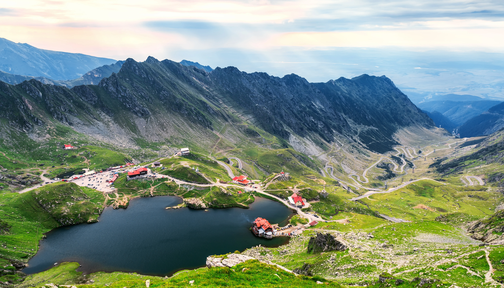

România se află în sud-estul Europei și are un relief diversificat, cu munți, dealuri și câmpii.
| Munții Carpați | Carpații oferă un peisaj montan spectaculos, fiind unul dintre cele mai mari lanțuri montane din Europa Centrală și de Est. |
| Delta Dunării | Delta Dunării este un ecosistem unic în lume, cu o biodiversitate impresionantă. |
